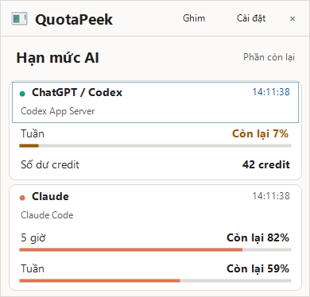
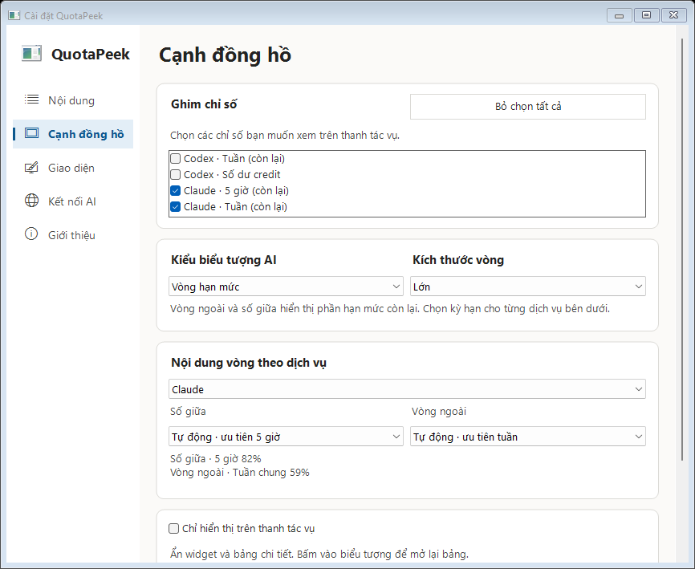
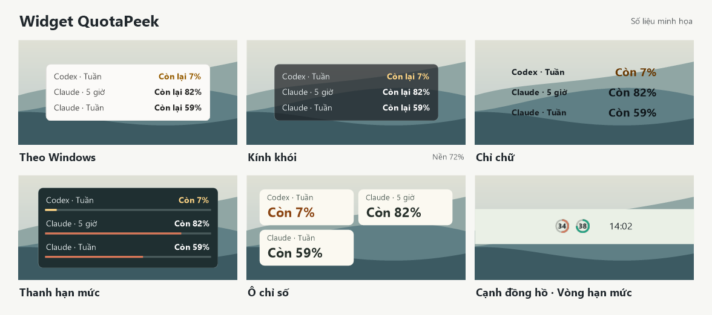
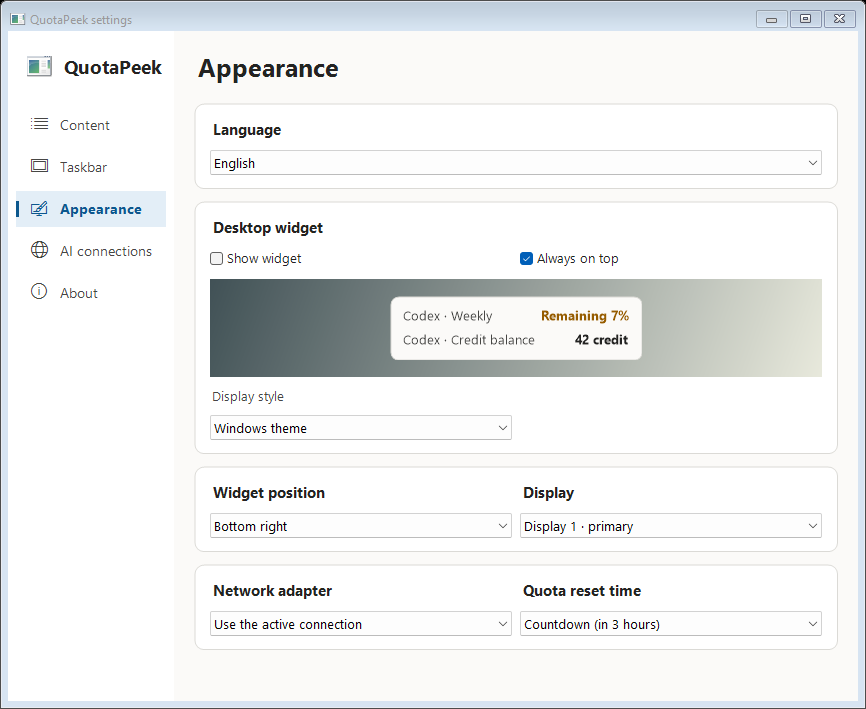

Theo dõi hạn mức AI ngay trên thanh tác vụ Windows 11 với QuotaPeek
Claude còn đủ hạn mức cho buổi làm việc này không? Codex còn bao nhiêu cho cả tuần? QuotaPeek đưa những con số đó ra cạnh đồng hồ Windows. Bạn có thể xem nhanh một dịch vụ bằng biểu tượng vòng, hoặc bấm vào biểu tượng để so sánh các kỳ hạn của nhiều dịch vụ trong cùng một bảng.
Tải QuotaPeek cho Windows 11 x64

Mở ứng dụng và kết nối dịch vụ AI
- Tải tệp QuotaPeek.exe, đặt vào thư mục bạn muốn giữ ứng dụng rồi mở tệp. Bấm biểu tượng QuotaPeek ở khay hệ thống. Nếu chưa thấy, mở danh sách biểu tượng ẩn bằng dấu ^ cạnh đồng hồ.
- Vào Cài đặt → Kết nối AI, chọn dịch vụ đang dùng và làm theo nút hướng dẫn. Với Codex, đăng nhập bằng tài khoản ChatGPT trong Codex. Với Claude, đăng nhập tài khoản thuê bao trong Claude Code. Sau đó chọn Đọc lại hạn mức nếu cần.
- Trong Nội dung, chọn dịch vụ và kỳ muốn theo dõi. Vào Cạnh đồng hồ → Ghim chỉ số để chọn những mục cần nhìn thấy ngay trên thanh tác vụ.
QuotaPeek lấy số liệu từ công cụ tương ứng trên máy. Ngoài Codex và Claude Code, ứng dụng hỗ trợ Antigravity CLI, Grok Build và Gemini cho Windows. Riêng với Gemini cho Windows, hãy mở Settings → Usage Limits trong Gemini để QuotaPeek đọc bảng đang hiển thị.
Cách đọc vòng hạn mức 5 giờ và hạn mức tuần
Nếu Claude báo đã dùng 18% trong kỳ 5 giờ, QuotaPeek sẽ hiện còn 82%. Cung màu cũng biểu diễn phần còn lại của kỳ được gán cho vòng. Khi kỳ đó còn 0%, cung màu rút hết. Di chuột lên biểu tượng để xem tên kỳ và số liệu chi tiết.

Trong Cài đặt → Cạnh đồng hồ, chọn Vòng hạn mức rồi chọn kích thước Vừa hoặc Lớn. Nếu cần ưu tiên hạn mức tuần, vào Nội dung vòng theo dịch vụ, chọn dịch vụ, đặt Số giữa thành Tuần chung và Vòng ngoài thành 5 giờ. Khi dịch vụ có hạn mức tuần riêng cho từng mô hình, bạn có thể ghim kỳ cần theo dõi.
Chọn widget phù hợp với màn hình làm việc
Vào Cài đặt → Giao diện → Hiện widget để đưa số liệu lên màn hình nền. Kiểu Chỉ chữ tiết kiệm chỗ khi chỉ xem một vài số. Thanh hạn mức giúp so sánh nhanh dịch vụ nào sắp hết, còn Ô chỉ số tách từng kỳ thành ô riêng. Bạn cũng có thể chọn Theo Windows hoặc Kính khói để dùng một bảng có nền.

Nếu cần theo dõi máy tính cùng lúc, bật các chỉ số CPU, RAM, ổ đĩa hoặc mạng trong Nội dung. Bạn có thể giữ RAM ngay cạnh đồng hồ và dành widget cho các hạn mức AI.
Đổi QuotaPeek sang tiếng Anh
Mở Cài đặt → Giao diện → Ngôn ngữ và chọn English. Các nhãn trong bảng hạn mức, widget và menu cạnh đồng hồ đổi ngay. QuotaPeek lưu lựa chọn cho lần mở sau. Để trở về tiếng Việt, mở Settings → Appearance → Language rồi chọn Tiếng Việt.

Khi nào số liệu cần đọc lại?
QuotaPeek đánh dấu bằng ~ khi số liệu vẫn đang chờ xác nhận. Nếu sau 10 phút vẫn chưa đọc lại được, biểu tượng cạnh đồng hồ hiện —. Di chuột để xem lần đọc gần nhất, hoặc mở Kết nối AI để kiểm tra trạng thái dịch vụ. Nếu đã qua giờ đặt lại, hãy chờ lần đọc mới trước khi dựa vào con số của kỳ tiếp theo.
Bạn có thể xem thay đổi của từng bản và tải tệp EXE trong danh sách bản phát hành QuotaPeek.